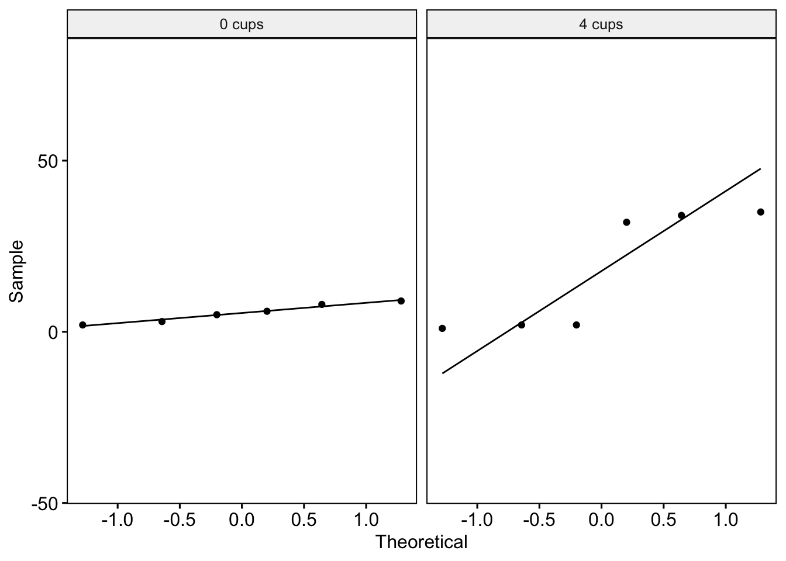
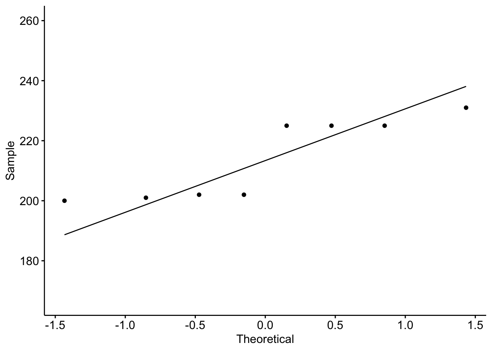

| coffee_group | admin_tasks |
|---|---|
| 4 cups | 5 |
| 4 cups | 18 |
| 4 cups | 14 |
| 0 cups | 6 |
| 0 cups | 4 |
| 0 cups | 17 |
| 0 cups | 14 |
6. Wilcoxon rank-sum test and Wilcoxon signed-rank test
Amy Atkinson
Lecture
This lecture comprises four parts:
Part 1: This part covers an introduction to non-parametric tests and when they might be useful to consider.
Part 2: This part covers how to test the assumption of normality with two independent groups.
Part 3: This part introduces you to the Wilcoxon rank-sum test. This includes when to use this test, the theory behind it, how the test statistic would be calculated manually, how to run the test in R, and how to interpret the output.
Part 4: This part covers how to test the assumption of normality with two repeated measures and also introduces you to the Wilcoxon signed-rank test, including when to use the test, the theory behind it, how to calculate the test statistic manually, how to run the test in R and how to interpret the output.
Download all the lecture slides here in both .pptx and .pdf format.
Lab preparation
Before the lab, please watch the following short video. This walks you through how to perform a Wilcoxon rank-sum test and Wilcoxon signed-rank test in R.
If you want to have a play around with the script yourself, the R markdown script and datasets can be downloaded here.
Lab
Overview
I’ll provide you with one or two research questions each week which will require you to complete the statistical tests covered in the lectures. You can work in groups or individually.
You can write your script as a .R or Rmd file. Use the lab preparation video and script, lecture slides, and previous content covered in the statistics modules to help you.
The presentation given at the start of the lab can be downloaded here.
Datasets
The datasets for this lab can be downloaded here.
Research question 1: Independent groups
You are a researcher interested in whether the old saying “an apple a day keeps the doctor away is true”.
You recruit 16 people and assign each participant to either a “0 apples” or “1 apple” group. Participants in the “0 apple” group eat 0 apples every day for a year. Participants in the “1 apple” group eat 1 apple a day for a year. You ask participants to report how many times they visited the GP in the year.
Research question 2: Repeated measures
You are interested in whether eating bananas keeps the doctor away.
This time you recruit only one group of participants. In the first year, you ask them to eat 0 banana every day. In the second year, you ask them to eat 1 bananas a day. You ask them to report how many times they visit the GP in Year 1 and Year 2.
Hints and tips
Your script should aim to answer and interpret both of these research questions. Start a new session on the server, then load in the required libraries (tidyverse, cowplot, ggpubr, rstatix) and the datasets.
For each research questions, you will need to:
Perform normality checks
Explore your data (e.g. descriptive statistics, a plot)
Conduct the statistical test
Calculate an effect size
Interpret the output
Upload your script to be considered for feedback
You/your group have the opportunity to submit your script to be considered for feedback. If you would like to submit your script, you can do so here by 5pm on Friday of Week 16. I’ll provide feedback on a subset of scripts. You will not be judged or marked on your scripts – I’m providing feedback to help you to improve your coding skills and prepare you for your dissertation next year.
Model script
A model script showing one way of answering the research questions above using R will be available here from 9am on Monday of Week 17.
Independent learning activities
Below are some independent learning activities you can have a go at to help consolidate the content. These are optional, but recommended. Activity 1 is the WBA. Activities 2 and 3 are further activities to help you consolidate the content.
Activity 1: The WBA
The WBA can be accessed here from 13th February 2025. Each student gets three attempts. We recommend having a go at the WBA following the lecture and lab. We recommend saving at least one attempt for revision purposes close in time to the class test.
Activity 2: Calculating test statistics manually
This activity is aimed at supporting your understanding of what the test statistics mean. The answers are below.
Wilcoxon rank-sum test
You are a researcher interested in whether the number of cups of coffee drank affects how many admin tasks participants can get done in an hour. You assign to one of two groups (drink 4 cups of coffee a day or drink 0 cups of coffee a day). After a week, you ask participants to come into the lab and ask them to complete a range of admin tasks. You count how many admin tasks they manage to complete.
Here is the data:
QUESTION 1: What is the test statistic?
Expand for hints!
To calculate this, you will need to work through the following steps:
Rank the data
Sum the ranks for each group
Calculate the mean rank for each group
Calculate the sum of ranks minus mean rank for each group
Use this information to identify the test statistic
If you are still unsure, have another look at the lecture.
QUESTION 2: What might R report as the test statistic and why?
Wilcoxon signed-rank test
You are a researcher interested in whether a reading intervention helps children. You assess children’s reading skills and then give them all an intensive reading intervention. You then measure their reading abilities again.
Here is the data:
| Before_intervention | After_intervention |
|---|---|
| 23 | 27 |
| 34 | 34 |
| 67 | 91 |
| 65 | 67 |
| 21 | 44 |
QUESTION 3: What is the test statistic?
Expand for hints!
To calculate this, you will need to work through the following steps:
Calculate the difference between “Before intervention” and “After intervention”
Note whether the difference is positive or negative
Rank the difference
Add up positive ranks and negative ranks
Use this information to identify the test statistic
If you are still unsure, have another look at the lecture.
QUESTION 4: What might R report as the test statistic and why?
Activity 2 answers
Wilcoxon rank-sum test
QUESTION 1 ANSWER:
Test statistic = 4.5
QUESTION 2 ANSWER: What might R report as the test statistic and why?
R reports the test statistic (W) as the sum of ranks minus the mean rank for the first factor level. R may therefore report the test statistic as 4.5 or 7.5.
How were these answers calculated?
Here is the how these answers were computed:
STEPS:
Rank the data:
| Group | Tasks_completed | Rank |
|---|---|---|
| 4 cups | 5 | 2.0 |
| 4 cups | 18 | 7.0 |
| 4 cups | 14 | 4.5 |
| 0 cups | 6 | 3.0 |
| 0 cups | 4 | 1.0 |
| 0 cups | 17 | 6.0 |
| 0 cups | 14 | 4.5 |
Sum the ranks per group:
4 cups = 13.5
0 cups = 14.5
Calculate the mean rank per group:
4 cups = 3*4 = 12. 12/2 = 6
0 cups = 4*5 = 20. 20/2 = 10
Calculate the sum of ranks minus mean rank per group:
4 cups = 13.5-6 = 7.5
0 cups = 14.5-10 = 4.5
Identify the test statistic:
Test statistic = The lowest sum of ranks. Test statistic = 4.5
Wilcoxon signed-rank test
QUESTION 3: What is the test statistic?“
V = 0
QUESTION 4: What might R report as the test statistic and why?
V = 0 or 10. V is equal to the sum of positive ranks. But whether ranks are positive or negative depends on whether you enter “before” or “after” first into the wilcox.test function (as this determines whether you calculate the difference by doing before-after or after-before).
How were these answers calculated?
Here is how these answers were computed:
STEPS:
Calculate the difference between “Before intervention” and “After intervention”:
| Before_intervention | After_intervention | Difference |
|---|---|---|
| 23 | 27 | -4 |
| 34 | 34 | Exclude |
| 67 | 91 | -24 |
| 65 | 67 | -2 |
| 21 | 44 | -23 |
Note whether the difference is positive or negative:
| Before_intervention | After_intervention | Difference | Sign |
|---|---|---|---|
| 23 | 27 | -4 | Negative |
| 34 | 34 | Exclude | |
| 67 | 91 | -24 | Negative |
| 65 | 67 | -2 | Negative |
| 21 | 44 | -23 | Negative |
Rank the difference:
| Before_intervention | After_intervention | Difference | Sign | Rank |
|---|---|---|---|---|
| 23 | 27 | -4 | Negative | 2 |
| 34 | 34 | Exclude | ||
| 67 | 91 | -24 | Negative | 4 |
| 65 | 67 | -2 | Negative | 1 |
| 21 | 44 | -23 | Negative | 3 |
Add up positive ranks and negative ranks:
Positive ranks: 0
Negative ranks: 10
Identify the test statistic:
V = 0
Activity 3: Interpreting R output
This activity is aimed at supporting your interpretation of R output. Part 1 uses an independent groups design. Part 2 uses a repeated measures design. Please note, this data are different to that used in Activity 2 (so the test statistics will be different). The answers are below.
1. An independent groups design
You are a researcher interested in whether the number of cups of tea drank affects how many admin tasks participants can get done in an hour. You assign participants to one of two groups (drink 4 cups of tea a day or drink 0 cups of tea a day). After a week, you ask participants to come into the lab and ask them to complete a range of admin tasks. You count how many admin tasks they manage to complete.
The R output is below:
Testing the assumption of normality
Q-Q plots:

Shapiro-Wilk test:
# A tibble: 2 × 4
tea_group variable statistic p
<chr> <chr> <dbl> <dbl>
1 0 cups admin_tasks 0.958 0.801
2 4 cups admin_tasks 0.728 0.0120QUESTION 1: Is the assumption violated?
Descriptive statistics and model output:
Descriptive statistics:
# A tibble: 2 × 5
tea_group med min max `n()`
<chr> <dbl> <int> <int> <int>
1 0 cups 5.5 2 9 6
2 4 cups 17 1 35 6Model output:
Warning in wilcox.test.default(x = DATA[[1L]], y = DATA[[2L]], ...): cannot
compute exact p-value with ties
Wilcoxon rank sum test with continuity correction
data: admin_tasks by tea_group
W = 17, p-value = 0.9357
alternative hypothesis: true location shift is not equal to 0QUESTION 2: What can we conclude? Report in APA format.
QUESTION 3: How was the p-value calculated?
2. A repeated measures design
You are a researcher interested in whether the amount of chocolate (in grams) eaten is different on a Saturday to a Monday. The R output is below:
Testing the assumption of normality
Q-Q plot:

Shapiro-Wilk test:
# A tibble: 1 × 3
variable statistic p.value
<chr> <dbl> <dbl>
1 chocolate_dataset$Difference 0.769 0.0132QUESTION 4: Is the assumption violated?
Descriptive statistics and model output:
Descriptive statistics:
median_sat median_mon min_sat min_mon max_sat max_mon n()
1 232 18 230 4 235 33 8Model output:
Warning in wilcox.test.default(chocolate_dataset$Saturday,
chocolate_dataset$Monday, : cannot compute exact p-value with ties
Wilcoxon signed rank test with continuity correction
data: chocolate_dataset$Saturday and chocolate_dataset$Monday
V = 36, p-value = 0.01368
alternative hypothesis: true location shift is not equal to 0QUESTION 5: What can we conclude? Report in APA format.
QUESTION 6: How was the p-value calculated?
Activity 3 answers
1. An independent groups design:
QUESTION 1: Is the assumption violated?
0 cups: The assumption of normality is not violated. The dots generally follow the line well in the Q-Q plot and the Shapiro-Wilk test is non-significant.
4 cups: The assumption of normality is violated. Quite a few points deviate from the line in the Q-Q plot and the Shapiro-Wilk test is significant.
QUESTION 2: What can we conclude? Report in APA format.
The Wilcoxon rank-sum test revealed no significant difference between the number of admin tasks completed in the 4 cup group (Median = 17, Range = 1-35) and the 0 cup group (Median = 5.5, Range = 2-9; W = 17, p = .936).
Note
In practice, you should also calculate the effect size and report that.
QUESTION 3: How was the p-value calculated?
The normal approximation with continuity correction.
2. A repeated measures design
QUESTION 4: Is the assumption violated?
The assumption of normality appears to be violated. Some points deviate a bit from the line in the Q-Q plot and the Shapiro-Wilk test is significant.
QUESTION 5: What can we conclude? Report in APA format.
The Wilcoxon signed-rank test revealed that participants ate significantly more grams of chocolate on Saturdays (Median = 232, Range = 230-235) than on Mondays (Median = 18; Range = 4-33), V = 36, p = .014.
Note
In practice, you should also calculate the effect size and report that.
QUESTION 6: How was the p-value calculated?
The normal approximation with continuity correction.
Asking questions
If you have any questions about this week’s content, please post them on the discussion board here. If you prefer to remain anonymous, you can post questions anonymously here. I will then copy your question to the discussion forum and answer it there and/or cover it in next Q&A session.